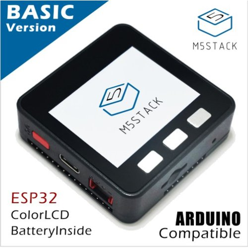

ハードウェア仕様(AKARI Light)
ハードウェアの仕様について説明します。
外観
AKARI Lightは卓上に配置可能なサイズです。AKARIとほぼ同等の機能を持ち、同じソフトで動作します。 より安価に、より簡単に組み立てることができます。
GPIO
ヘッドのGPIOにより3V3、5Vの電源出力や、デジタル出力、PWM出力の制御、デジタル入力、アナログ入力の取得ができます。 デジタル出力やPWM出力は0~3.3Vの範囲で出力、デジタル入力、アナログ入力は0~3.3Vの範囲で入力が可能です。
{kind=link}
DepthAIカメラ
OAK-D-LITE
ステレオカメラ2基と4Kカメラ1基を通して、深度情報と色情報を取得できるAIカメラです。
https://shop.luxonis.com/products/oak-d-lite-1?_pos=1&_psq=lite&_ss=e&_v=1.0
{kind=link}
メインカメラモデル |
Sony IMX214 |
焦点範囲 |
8 cm〜∞ |
有効焦点距離長 |
3.37 mm |
ステレオカメラモデル |
OmniVision OV725 |
焦点範囲 |
6.5 cm〜∞ |
有効焦点距離長 |
1.3 mm |
モータ
Feetech STS3215
小型のシリアルサーボです。

電源電圧min |
4V |
電源電圧max |
7.4V |
スピードmax |
0.192sec/60° |
トルクmax[kgf・cm] |
19.5kgf・cm |
制御信号 |
シリアル |
M5Stack
M5StackBasic
ESP32を搭載した開発デバイスです。
https://shop.m5stack.com/products/esp32-basic-core-lot-development-kit-v2-7
{kind=link}
CPU |
240MHz dual core、 600 DMIPS、 520KB SRAM、 Wi-Fi、 dual mode Bluetooth |
ストレージ |
microSDスロット |
搭載LCD |
320 x 240 カラーTFT LCD |
内蔵スピーカー |
1W |
環境センサ（ENV Ⅲ）
SHT30とQMP6988を搭載した温度/湿度/気圧が測定できる環境センサです。
{kind=link}
温度測定範囲 |
-40 ~ 120 ℃ |
標準温度許容差 |
0 ~ 60 ℃/±0.2 ℃ |
湿度測定範囲 |
10 ~ 90 %RH / ±2 % |
気圧測定範囲 |
300 ~ 1100 hPa / ±1 hPa |
通信プロトコル |
I2C：SHT30（0x44） QMP6988（0x56） |
光センサ
環境光の強度を検出します。
https://shop.m5stack.com/products/light-sensor-unit
{kind=link}
コンピュータ
RaspberryPi 5 (8GB)
Linuxが動作する手のひらサイズのシングルボードコンピュータ（SBC）です。
https://raspberry-pi.ksyic.com/main/index/pdp.id/1016/

基本仕様
CPU |
2.4GHz 4コア Cortex-A76 （ARMv8、64bit、L2: 512KB、L3: 2MB） |
GPU |
VideoCore VII® |
メモリー |
8GB LPDDR4X-4267 SDRAM、2133MHz |
RTC(Real Time Clock) |
RTCと電池コネクタ |
電源 |
USB Type-C ソケット 5V 5.0A PD使用 |
インタフェース／通信
イーサネット |
|
無線LAN |
IEEE 802.11 b/g/n/ac 2.4/5GHz デュアルバンド |
Bluetooth |
Bluetooth Ver5.0＋LE （BLE） |
ビデオ出力 |
2 x micro HDMI (最大4Kp60)、2 x MIPI DSI 4-lane （22pin 0.5mmピッチ） （カメラ入力と共有） |
オーディオ出力 |
2 x HDMI（ビデオ出力と共有）、I2Sピンヘッダ |
カメラ入力 |
2 x MIPI CSI 4-lane （22pin 0.5mmピッチ）（ビデオ出力と共有） |
PCIe |
1 x PCIe 2.0 シングルレーン （FFCコネクタ） |
USB |
4 x USB Type-A ソケット (2 x USB 2.0、2 x USB 3.0) |
GPIOコネクター |
40ピン 2.54mm ピンヘッダー |
カード スロット |
micro SDメモリーカード（SDIO） |